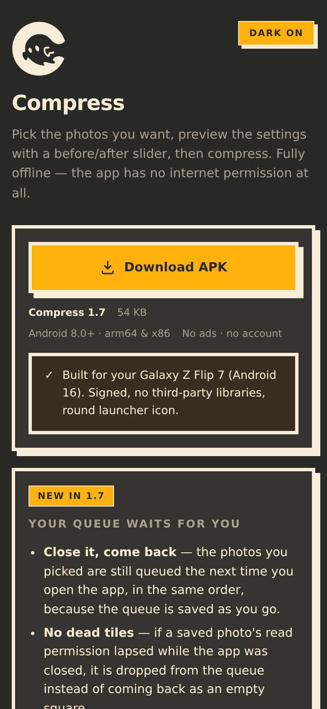
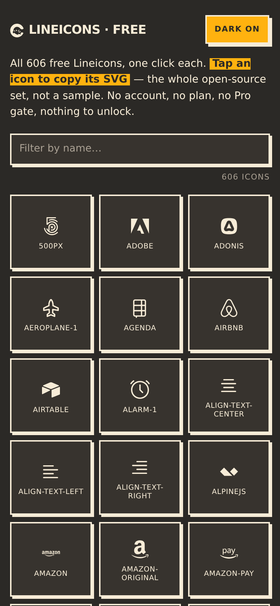
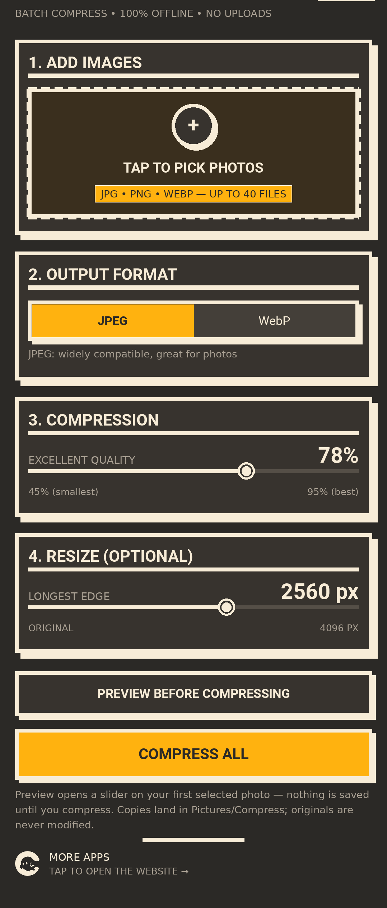
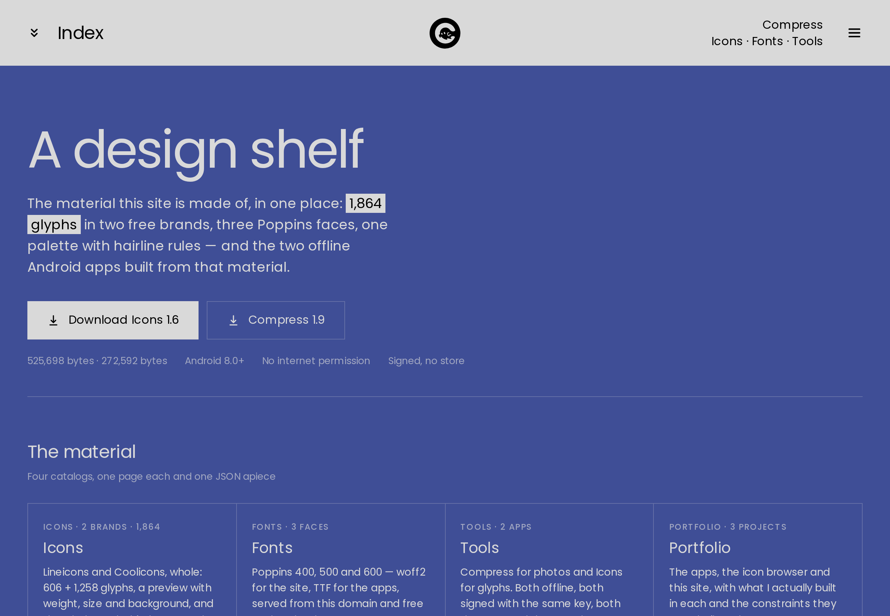
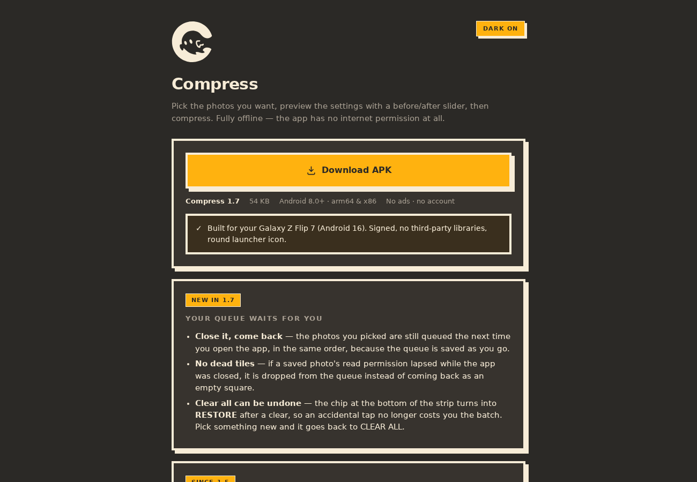
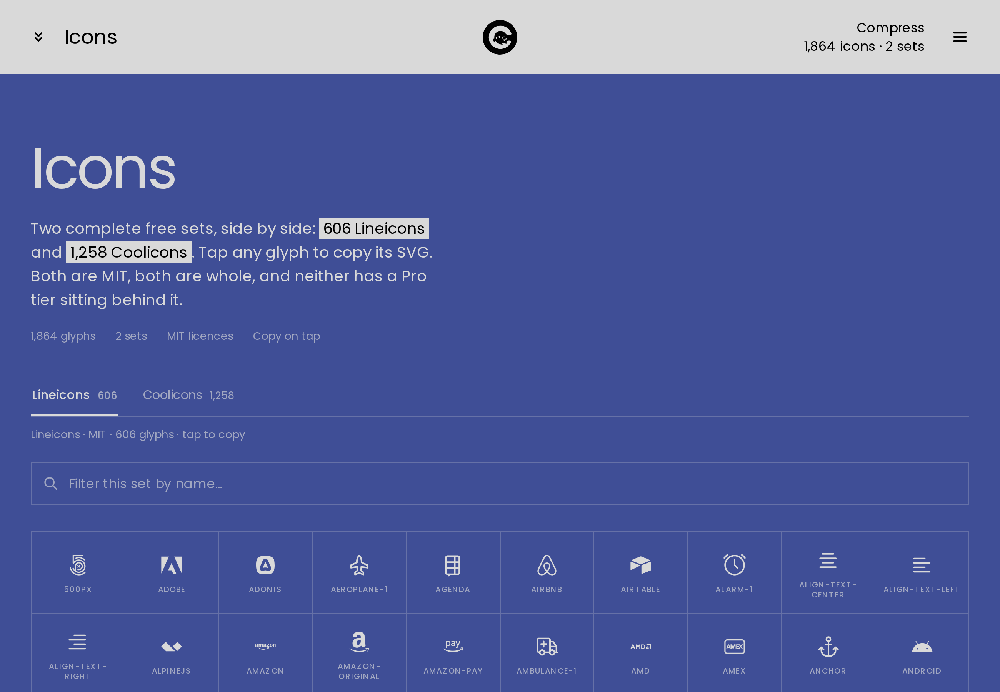
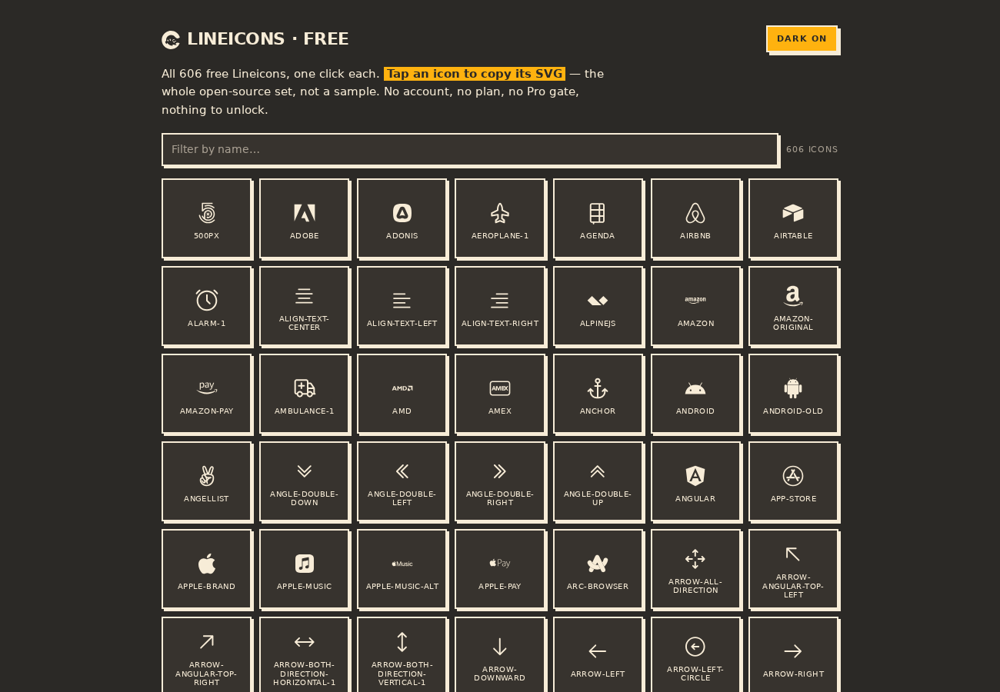
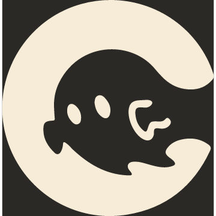
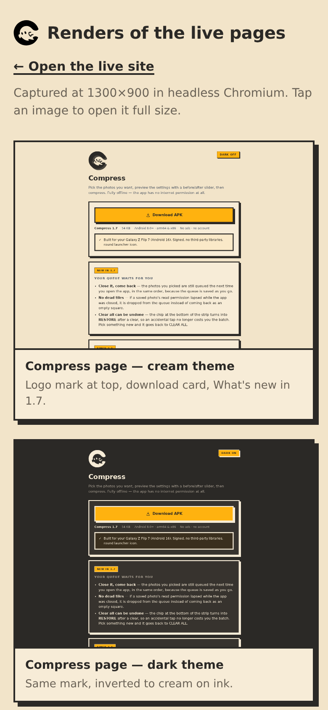

Renders of the live pages
← Open the live site
Pages captured in headless Chromium at 1300×900 and 390×844. The two app screens are design renders drawn from the same dp values — there is no emulator here, so they are not device captures. Tap an image to open it full size.
On a phone — 390×844
Compress page — phone, cream Header on one row, meta on two lines, tighter card.

Compress page — phone, dark Same layout inverted.
Icons page — phone, cream Brand and toggle share a row; counter sits under the search field.

Icons page — phone, dark Three columns, labels at 10px.
In the app — Galaxy Z Flip 7, 411×960
App footer — cream Scrolled to the bottom of the main screen: your mark, MORE APPS, and the website link.

App footer — dark Same footer in the dark palette; the mark and link both follow it.
On a desktop — 1300×900

Compress page — cream theme Logo mark at top, download card, What's new in 1.8.

Compress page — dark theme Same mark, inverted to cream on ink.

Icons page — cream theme Logo beside the brand line, 606 icons below.

Icons page — dark theme Full free set, filter field, no paywall.
Logo — on cream Rendered from the shipped logo.svg.

Logo — on ink Same file, currentColor fill.

This gallery — phone width Captured at 390x844 to check the page you are reading.